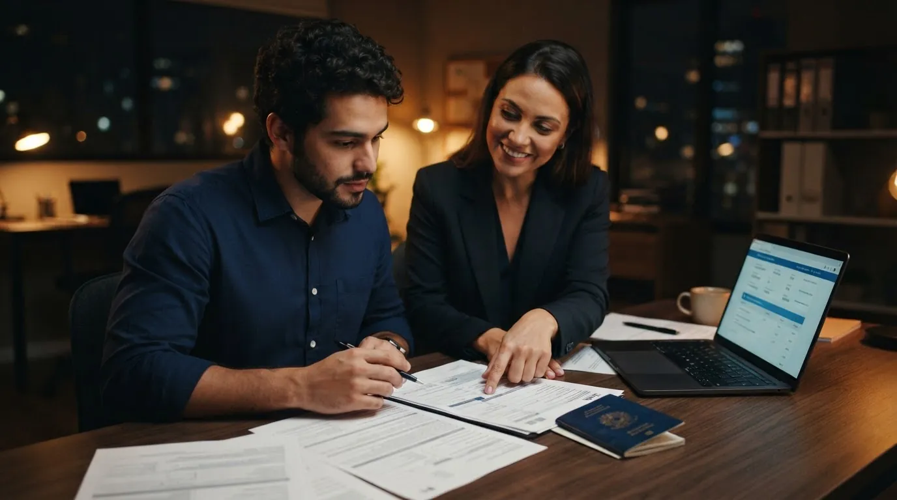
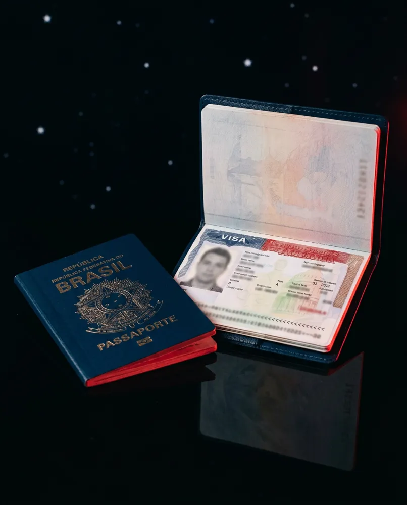

Emissão de Passaporte em Fortaleza
Solicitar um passaporte envolve algumas etapas que precisam ser realizadas corretamente antes do atendimento presencial. A AR Visa oferece suporte para facilitar esse processo, com auxílio no preenchimento do formulário da Polícia Federal, na emissão da guia de pagamento, no agendamento e na conferência da documentação necessária.
Nossa assessoria ajuda a evitar erros no preenchimento ou a falta de documentos no dia do atendimento. Orientamos você sobre cada etapa e deixamos o processo organizado para que você possa comparecer à Polícia Federal preparado.
A taxa de emissão do passaporte é paga diretamente à Polícia Federal pelo solicitante. O atendimento presencial também é obrigatório, pois a coleta de fotografia, assinatura e impressões digitais é realizada pessoalmente.
Se você pretende viajar para os Estados Unidos, Canadá ou outros destinos que exigem passaporte válido, podemos ajudar você a organizar essa etapa antes de iniciar seu processo de viagem ou visto.
Informações Importantes Sobre o Seu Passaporte
Depois de receber o passaporte, é importante saber identificar e conferir corretamente as informações presentes no documento. O número do passaporte é o código utilizado para identificar o documento em reservas, formulários e diferentes procedimentos de viagem. A série também faz parte das informações do passaporte e pode ser solicitada em determinadas situações.
Outro ponto importante é a validade do passaporte, que deve ser observada antes de planejar uma viagem internacional, já que alguns países exigem um período mínimo de validade para permitir a entrada. Também é importante conferir se todos os dados pessoais estão corretos após a emissão.
Ter atenção a essas informações pode evitar problemas no momento de comprar uma passagem, preencher formulários ou iniciar um processo de visto. A AR Visa pode orientar você sobre essas informações e esclarecer dúvidas relacionadas ao seu passaporte.
Fale Conosco

Perguntas Frequentes sobre Passaporte em Fortaleza
Tire suas principais dúvidas sobre emissão, renovação, documentos, valores, validade e procedimentos relacionados ao passaporte.
A AR Visa tira o passaporte no meu lugar?
Não. O atendimento presencial na Polícia Federal deve ser realizado pelo próprio solicitante. A AR Visa auxilia nas etapas burocráticas, como preenchimento do formulário, emissão da guia, agendamento e conferência da documentação.
Por que contratar se dá para fazer sozinho?
O processo pode ser realizado diretamente pelo solicitante. A assessoria da AR Visa existe para facilitar essa etapa, com auxílio no preenchimento das informações, organização dos documentos, pagamento da guia e agendamento, além da conferência de tudo o que é necessário para o atendimento.
Preciso de passaporte para tirar o visto americano?
Sim. Para solicitar um visto americano, é necessário possuir um passaporte válido. O número do passaporte é utilizado durante o preenchimento do formulário de solicitação do visto e o documento também é necessário para os procedimentos posteriores.
Quais documentos preciso para tirar o passaporte?
A documentação pode variar conforme a situação de cada solicitante. É necessário apresentar os documentos exigidos pela Polícia Federal no atendimento. A AR Visa orienta você sobre o que precisa ser levado e ajuda a conferir a documentação antes do agendamento.
Quanto custa para tirar o passaporte?
A taxa de emissão do passaporte comum brasileiro é de R$ 257,25, valor cobrado pela Polícia Federal e pago diretamente pelo solicitante por meio da GRU (Guia de Recolhimento da União). Esse valor não inclui a assessoria da AR Visa.
Qual é a validade do passaporte?
A validade depende da idade do titular no momento da emissão. Para adultos, o passaporte comum brasileiro tem validade de 10 anos. Para menores de idade, o prazo é menor e varia conforme a faixa etária.
Posso renovar meu passaporte em Fortaleza?
Sim. Quando o passaporte anterior precisa ser substituído, é possível realizar uma nova solicitação seguindo os procedimentos da Polícia Federal. A AR Visa pode auxiliar na organização das informações, documentação e agendamento do atendimento.